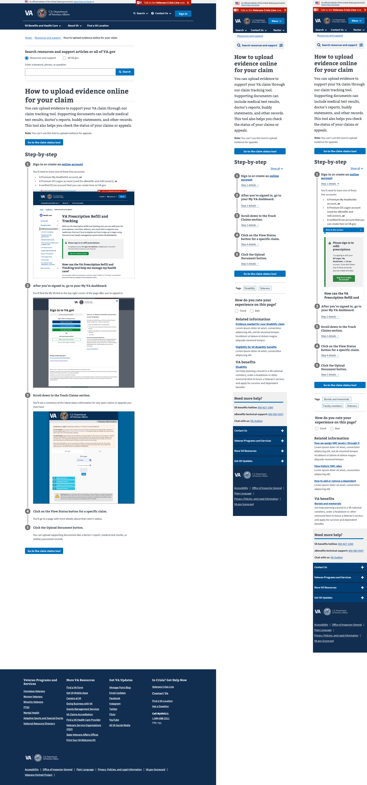

Case study: VA Resources and Support
The problem
Relevant, Veteran-focused information that supports VA benefits for all Veterans was outdated, incorrect, and duplicative which made it near impossible for users to navigate the complex VA landscape. How do we ensure that helpful, relevant tier 2 information that supports tier 1 benefit content is accessible and findable in the new VA.gov site experience, AND does not dilute, distract, and clutter Veterans' benefit product UX?
The solution
Develop a Drupal-based content management system called Resources and Support that enables VA to easily migrate or rewrite content but also serve as a knowledge base for Veterans and others to access relevant content and connect them to appropriate benefit services and tools.
Design process
In order to migrate over 650,000 pages of legacy content into the newly modernized VA.gov website, we triaged the content into tiers, prioritizing Veteran-facing content first. Tier 1 content is benefit content and tools (applying for benefits, accessing benefit tools to manage your existing benefits) for beneficiaries (Veterans, family members, service members). Tier 2 content is benefit-adjacent content (for beneficiaries, and people who work with beneficiaries). Tier 3 content is organizational/administrative/office content. Once we determined which content needed to be migrated, we gathered around a white board and spent many hours developing user and business goals, establishing who our users are, and developed research plans to validate our assumptions. We then developed the information architecture, wireframes and design comps for Resources and Support and put them in front of Veterans and VA staff to validate our hypotheses and goals. As we collected feedback, we iterated and refined our design decisions.
My role
Working with expert content strategists, engineers, and product owners, I designed page templates (e.g. a FAQ page, a Questions and Answers page, etc) that leveraged the VA design system and easily integrated with Drupal. These templates were designed from scratch, using previous VA web pages and content as samples. We worked together to provide documentation on how they are built, how they should be used (including guidance in the Drupal authoring experience), and how they will improve usability.
View a mural board of all of the templates.
Before
Complicated UX made it hard to find clear answers to questions.
After
Question and answer template enables authors to provide simple, understandable information.
Mobile and desktop design for the landing page

Mobile and desktop design for the step-by-step template
